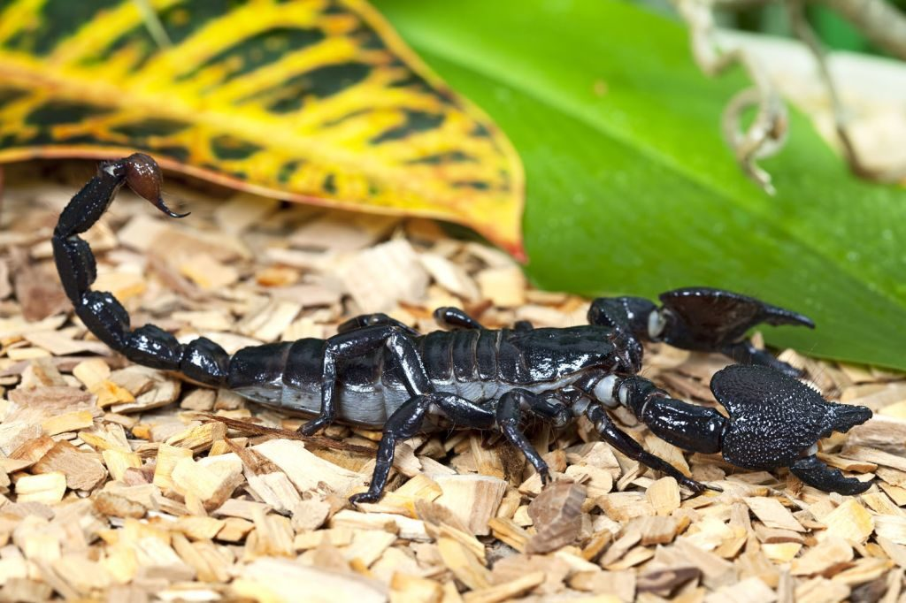
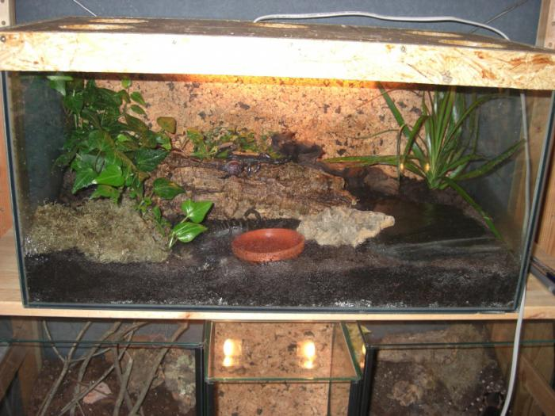
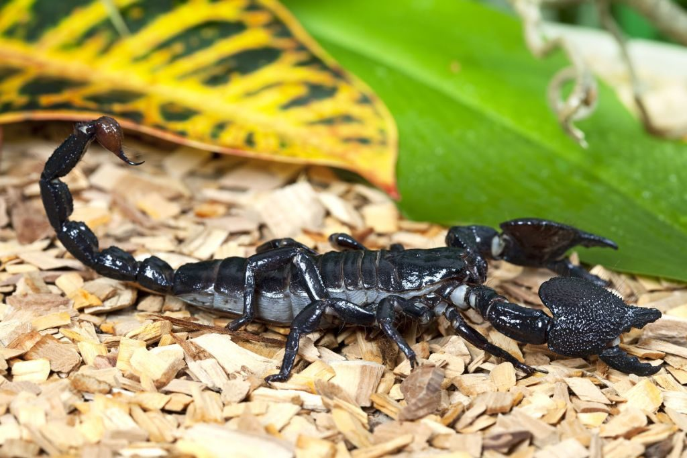
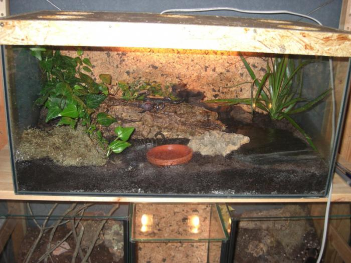
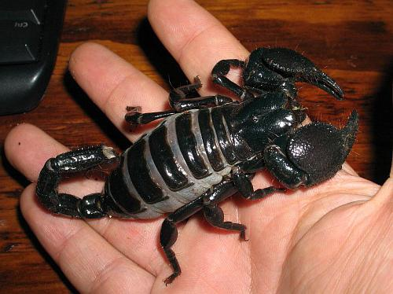

Привычки шарахаться от пауков и визжать при их виде не способствуют дружескому к ним отношению. А зловещие киношные сцены с нападением скорпионов и людьми, умирающими в муках, создали им поистине убийственную репутацию. В лучшем случае народ относится к ним терпимо – дескать, божья тварь, имеет право на существование… Мало кого удастся убедить, что императорские скорпионы – существа по-своему красивые и интересные для наблюдения. Однако по всему миру их содержат многие, и весьма рекомендуют знакомым последовать их примеру.
Почему выбирают «императора»
Признаться, в домах любителей паукообразных обитают не только императорские скорпионы. У опытных поклонников встречаются самые разные представители семейства. Однако именно эти имеют особенности, по которым предпочтение чаще всего отдают именно им:
Вопреки всеобщему заблуждению, из более чем тысячи видов скорпионов для людей опасны только около 25. Ядовиты они, безусловно, все – но тяжелых последствий ждать можно от немногих. Среди таких «безобидных» - Hadogenes, Hottentotta, Heterometrus и императорский скорпион Pandinus Imperator. Этот вид паукообразных наиболее крупный, что отражено в его названии. Взрослые особи могут вырастать до 20 сантиметров. То есть наблюдение за ними значительно облегчается. К тому же эти существа довольно медлительны, что тоже благоприятствует «подсматриванию». Императорские скорпионы не отличаются агрессивностью. Это снижает риск нападения – недружелюбно и настороженно ведут себя только самки с детками. По сравнению с другими видами, «императора» можно назвать довольно неприхотливым. В природе он, бывает, несколько дней обходится без еды и питья. Да и ухудшение условий жизни убивает его отнюдь не сразу – он прячется при снижении температуры, становится вялым, но может продержаться, пока вы ремонтируете обогрев.


Подстилка обязательна! Дно террариума непременно выстилается мхом, торфом или грунтом для комнатных растений из тропиков. Можно использовать древесную кору, влажный вермикулит или кокосовую стружку. Слой подстилки – минимум сантиметров пять, императорские скорпионы роют в них убежища. Подстилка постоянно должна быть влажной, но не мокрой, чтобы не появились плесень и гниение. С этой же целью она меняется 3-4 раза в год. Комфортная температура Императорские скорпионы хорошо себя чувствуют в диапазоне +20-30 градусов. В наших домах такая стабильность не наблюдается, поэтому под дно террариума подстилается постоянно работающий термоковрик. Он будет подсушивать субстрат подстилки, поэтому за ее увлажненностью надо бдительно следить. Тропические дожди Влажность необходима не только простеленному субстрату, но и самому «императору» - на родине у него регулярно льет с неба, в этом же он нуждается и у вас дома. Особых приспособлений не требуется, довольно обычного пульверизатора и регулярности. Опрыскивать надо и почву, и обитателей аквариума каждый день, но без перебора, чтобы не застаивались лужи, а по стенкам не стекал конденсат.
Вернуться наверх?
Вопреки всеобщему заблуждению, из более чем тысячи видов скорпионов для людей опасны только около 25. Ядовиты они, безусловно, все – но тяжелых последствий ждать можно от немногих. Среди таких «безобидных» - Hadogenes, Hottentotta, Heterometrus и императорский скорпион Pandinus Imperator. Этот вид паукообразных наиболее крупный, что отражено в его названии. Взрослые особи могут вырастать до 20 сантиметров. То есть наблюдение за ними значительно облегчается. К тому же эти существа довольно медлительны, что тоже благоприятствует «подсматриванию». Императорские скорпионы не отличаются агрессивностью. Это снижает риск нападения – недружелюбно и настороженно ведут себя только самки с детками. По сравнению с другими видами, «императора» можно назвать довольно неприхотливым. В природе он, бывает, несколько дней обходится без еды и питья. Да и ухудшение условий жизни убивает его отнюдь не сразу – он прячется при снижении температуры, становится вялым, но может продержаться, пока вы ремонтируете обогрев.

Оборудование террариума
Если вас заинтересовал императорский скорпион, содержание начинается с выбора дома для него. Минимальный размер аквариума – 35х35 сантиметров (если вы ограничились одной – двумя особями). Высота стенок – минимум 15 см; слишком высокие просто не нужны, поскольку скорпионы по гладким стенам не лазят и охотятся только в горизонтальных плоскостях. Сверху террариум накрывается сеткой или пластиком с вентиляционными отверстиями. В пейзаже обязательны укрытия: крупные куски коры, половинки небольших глиняных горшков, искусственные дупла. Освещение особо не нужно – императорский скорпион в домашних условиях остается ночным существом, а от яркого света и вовсе пытается спрятаться. Однако некоторые пристраивают ультрафиолетовую или красную лампу исключительно из эстетических соображений: в их лучах питомец таинственно светится. Большинство скорпионов – одиночки. Мало того! Смертельные драки за территорию между ними - обычное дело . Черный императорский скорпион в этом отношении - исключение, его желательно содержать небольшими «стайками» или хотя бы парами.
Подстилка обязательна! Дно террариума непременно выстилается мхом, торфом или грунтом для комнатных растений из тропиков. Можно использовать древесную кору, влажный вермикулит или кокосовую стружку. Слой подстилки – минимум сантиметров пять, императорские скорпионы роют в них убежища. Подстилка постоянно должна быть влажной, но не мокрой, чтобы не появились плесень и гниение. С этой же целью она меняется 3-4 раза в год. Комфортная температура Императорские скорпионы хорошо себя чувствуют в диапазоне +20-30 градусов. В наших домах такая стабильность не наблюдается, поэтому под дно террариума подстилается постоянно работающий термоковрик. Он будет подсушивать субстрат подстилки, поэтому за ее увлажненностью надо бдительно следить. Тропические дожди Влажность необходима не только простеленному субстрату, но и самому «императору» - на родине у него регулярно льет с неба, в этом же он нуждается и у вас дома. Особых приспособлений не требуется, довольно обычного пульверизатора и регулярности. Опрыскивать надо и почву, и обитателей аквариума каждый день, но без перебора, чтобы не застаивались лужи, а по стенкам не стекал конденсат.
Тропические дожди
Влажность необходима не только простеленному субстрату, но и самому «императору» - на родине у него регулярно льет с неба, в этом же он нуждается и у вас дома. Особых приспособлений не требуется, довольно обычного пульверизатора и регулярности. Опрыскивать надо и почву, и обитателей аквариума каждый день, но без перебора, чтобы не застаивались лужи, а по стенкам не стекал конденсат.В террариуме должна стоять поилка – пьют императорские скорпионы постоянно, еще и ванну в ней принимают. Частота «дождевания» снижается до двух-трех раз в неделю в начале сентября, когда на родине животного заканчивается дождливый сезон.Меню для скорпиона
Ежедневно кормить этих паукообразных не требуется. Взрослые едят не больше двух раз в неделю; подрастающее поколения – раза три-четыре. Однако и медлить с кормлением не стоит: при недостатке пищи они могут полакомиться друг другом. К перееданию и ожирению императорские скорпионы не склонны, так что для определения количества еды достаточно пару раз за ними понаблюдать и сделать выводы. В основе рациона – насекомые и черви. Взрослые особи легко слопают мышонка или ящерицу (их лучше умертвить заранее – скорпионы поедают жертву живьем, а зачем наблюдать чьи-то мучения?). Обычно еда складывается в блюдце, но некоторые предпочитают кормить питомца с рук. Осторожность – превыше всего!
Несмотря на то, что «император» человека убить или серьезно отравить не может, безопасность его весьма относительна. Яд, выпускаемый им в ранку, может вызвать аллергию. Да и сам процесс приятным не назовешь. Поэтому решив «потискать» питомца, стоит убедиться, что он не против. Боевая позиция – явное предупреждение о нерасположенности к общению. Не стоит делать резких телодвижений – испуганный скорпион ответит моментально. Лучше подставить ему ладонь, чтобы он взобрался на нее сам, или пересадить его на руку, взяв пинцетом с мягкими лапками за хвост.Вернуться наверх?